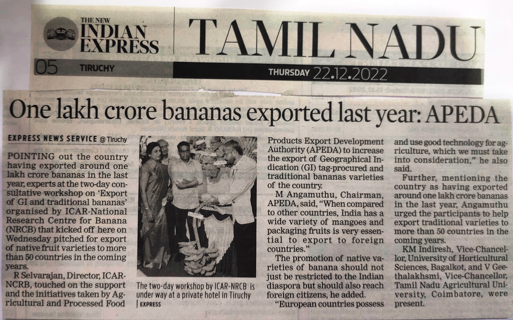
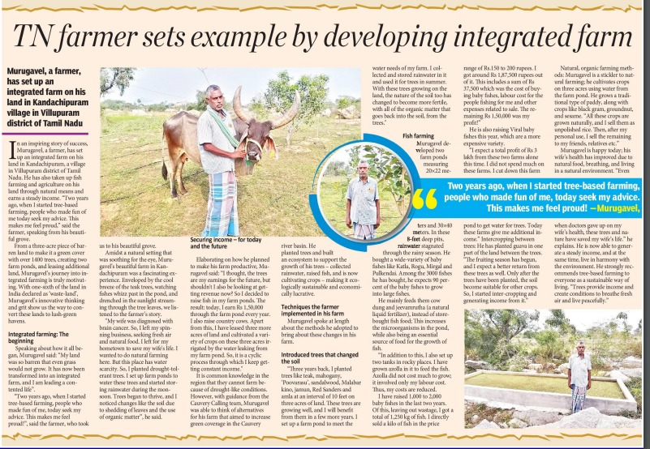
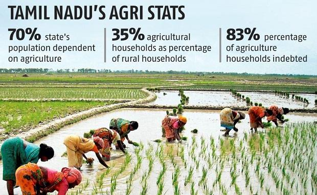
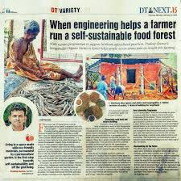
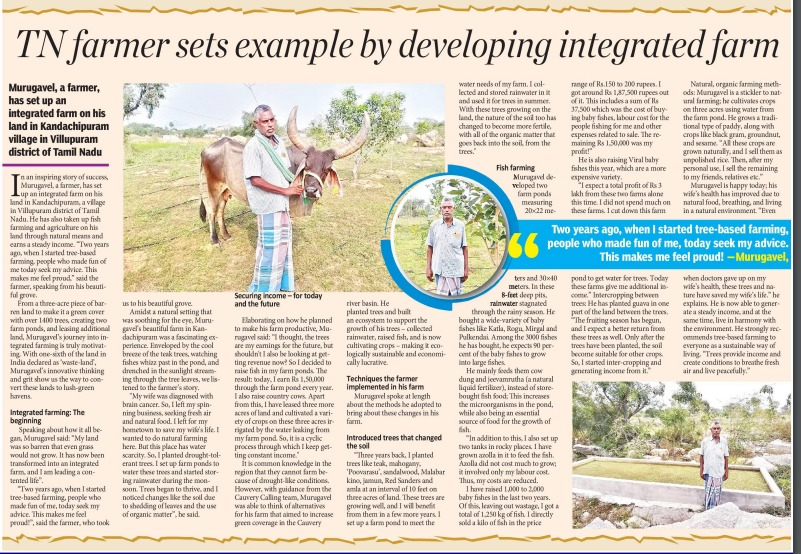
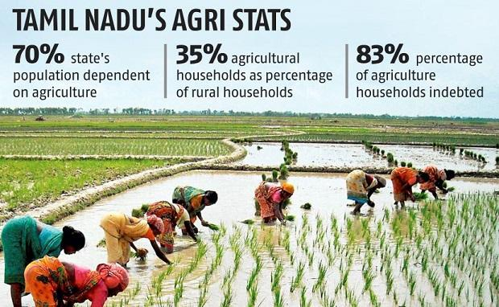
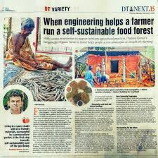
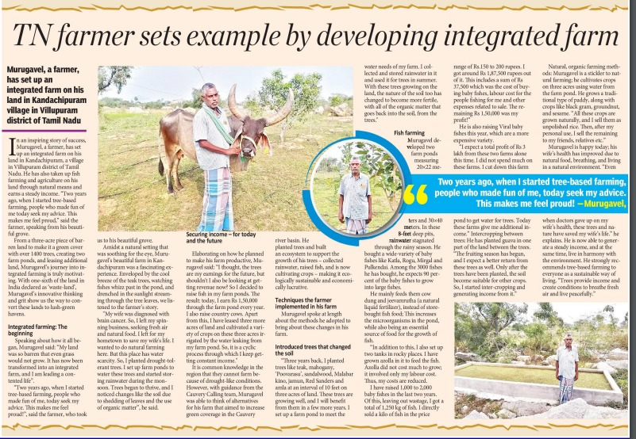
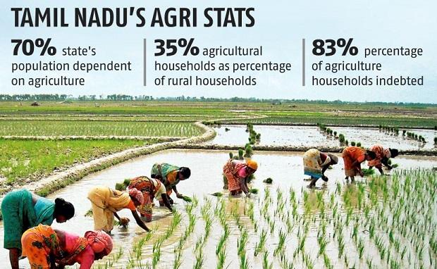
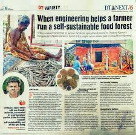

Schemes
In Tamil Nadu, agricultural schemes play a pivotal role in driving the state's agrarian economy forward, fostering growth, sustainability, and equitable development across its diverse agricultural landscape. From initiatives aimed at enhancing productivity and crop diversification to those focusing on irrigation infrastructure and farmer welfare, Tamil Nadu's agricultural schemes embody a commitment to harnessing innovation and empowering farmers for a prosperous future.
Few of the major schemes include:
Agriculture Micro Irrigation Scheme of Pradhan Mantri
Under this scheme, farmers are given 100% subsidy to small and marginal farmers and 75% subsidy to large farmers to set up micro irrigation facility.
Eligibility: Total financial assistance available is 55% for small and marginal farmers and 45% for other farmers. Subsidy will be given for up to 5 hectares per beneficiary.
PM-Kisan Samman Nidhi
It offers Rs 6000 a year to all landholding farmer families. Tamil Nadu has received Rs 2459 crore benefit from the Union Government PM-Kisan Samman Nidhi.
Timeless News: Captured in Print

 








NABARD
NABARD(National Bank for Agriculture and Rural Development) by virtue of its Financial, Developmental and Supervisory role is touching almost every aspect of rural economy, including providing refinance support, building rural infrastructure, preparing district level credit plans, guiding and motivating the banking industry in achieving credit targets. NABARD has projected the priority sector credit potential for Tamil Nadu at Rs 8.3 lakh crore. This is huge rise by 69% over the corresponding year of 2023-24 at Rs 4.9 lakh crore
Gramin Bhandaran Yojana
Gramin Bhandaran Yojana, a Capital Investment Subsidy Scheme for Construction / Renovation / Expansion of Rural Godowns has been introduced by Govt. of IndiaThe main objectives of the scheme include creation of scientific storage capacity with allied facilities in rural areas to meet the requirements of farmers for storing farm produce, processed farm produce, consumer articles and agricultural inputs; promotion of grading, standardization and quality control of agricultural produce to improve their marketability
PMKSY
PRADHAN MANTRI KRISHI SINCHAYEE YOJANA, Micro Irrigation technology plays a vital role in Agriculture in saving water and increasing productivity through effective utilization of every drop of water. Micro Irrigation has received considerable attention from farmers for its perceived ability to contribute significantly to groundwater resources development, agricultural productivity and economic growth. Drip Irrigation System is a life saver for many farmers in Tamil Nadu, by enhancing the yield and quality of the produce. Increasing water scarcity and limited availability of labour has paved the way for implementation of Micro Irrigation scheme. Micro Irrigation technology improves water use efficiency by 40% - 60% by precise water application. Through fertigation technology, fertilizers are directly applied to the root zone in drip irrigation, hence fertilizer use efficiency is also increased.